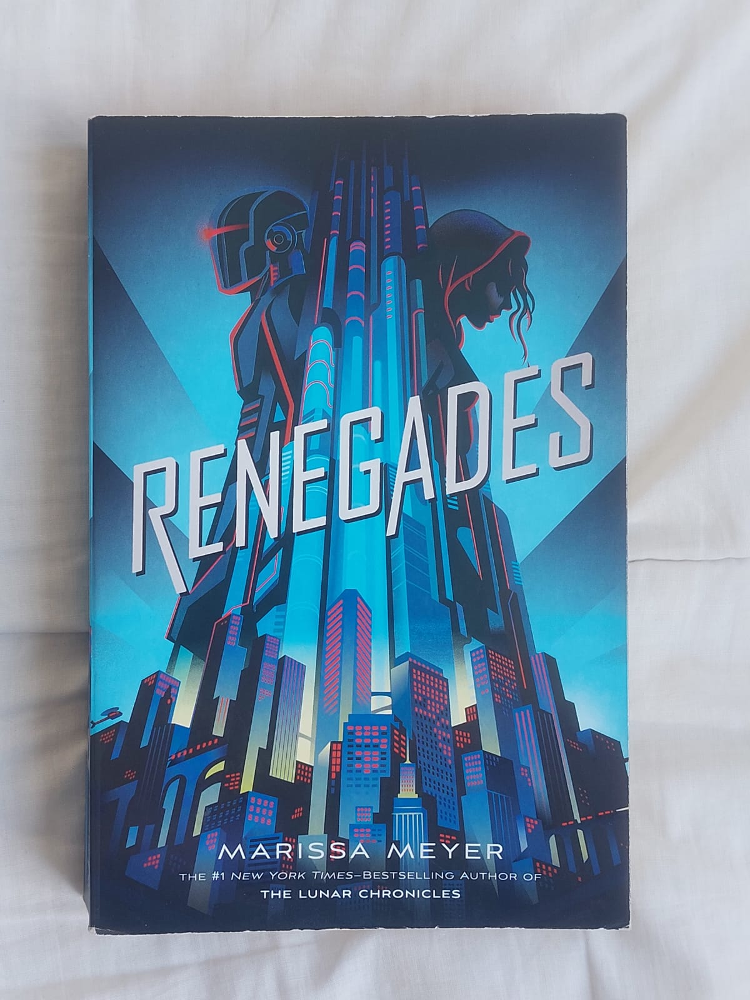
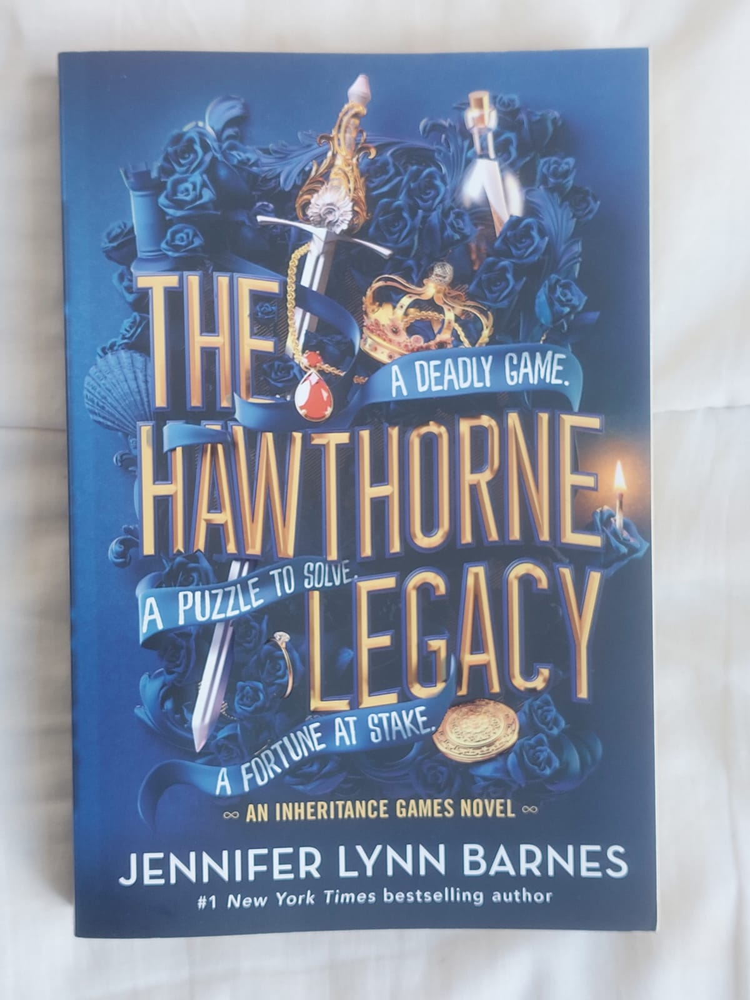

In here you'll find two of my favorite things in the whole world, music and books. I'll tell you about some of my fav books and what they are about and also my top favorite singers and some of their incredible albums!
Books
The renegades trilogy by Marissa Meyer tells the story of a girl called Nova whose parents and sister were killed by a dangerous gang in their futuristic city. This city is ruled by superheroes called renegades that are supposed to help everyone that needs it, but because they didn't arrive when the girl needed their help, she doesn't believe in them. The actual story starts when she is 18, we see that she joined a villain gang that is opposed to the renegades and their ideas. I love this trilogy because it shows that there is not such thing as completly heroic or evil.

The Harry Potter series by J.K Rowlling has to be my favorite series I have ever read. It tells the story of a boy, Harry Potter whose parents were killed by Voldemort, a dangerous Wizard, when he was a baby. The truth is that this wizard wasn't trying to kill Harry's parents, he wanted to kill him. Because of this, he is sent to his aunt's house that same night by Dumbledore, the principal of Hogwarts, a magic school. He lives in this house for 11 years where he is treated badly by his uncle, aunt and cousin. One day he receives a letter from Hogwarts telling him that he is a wizard and that he should attend the school. From that day on Harry discovers a new world, filled with people that cares for him. I love this series because it represents how you can find family in people that aren't strictly blood related with you. It also shows the power of love.
The inhertance games trilogy by Jennifer Lynn Barnes is a YA trilogy tells the story of a young girl called Avery. Her mom passed away and now she is living in her car and has a lot of money problems. One day she gets called from her school, were she finds out that one of the richest families in the country, the Hawthornes, are looking for her because she appears to be the heir of their fortune. The only problem is that for her to receive it she has to live in the mansion for a year with the rest of the family, who are completly confused and angry at her, and are willing to do whatever it takes to get the money. I love this trilogy because its filled with mysteries, riddles and plot twists.
Music
My musical taste is full of variety. I love pop, folk, salsa, merengue, rock, slow songs, indie, etc, and I think I owe this to my parents, who are actually kind of music freaks. I would say that my favorite artists would be Taylor Swift first place because I enjoy how lyrical and poetic she can get. Then it would be Morat, a colombian band that mainly sings spanish pop. I love their songs because they've got good rythms and also because their lyrics are really romantic.
Below you can find my favorite Taylor Swift Music Video!